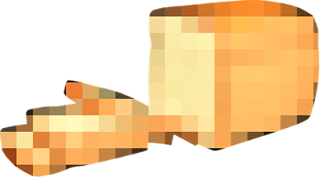

Что произошло на самом деле?

К итогам →Дюранти систематически отрицал Голодомор, получая доступ и привилегии от советских властей. Его репортажи использовались СССР как доказательство западного признания. Журналист Гарет Джонс опубликовал правдивые свидетельства — Дюранти публично назвал его лжецом. Джонс оказался в изоляции, его карьера была разрушена. Масштаб замалчивания сопоставим с соучастием в сокрытии преступления.